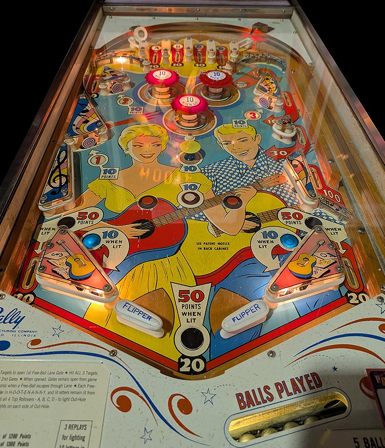

Top lanes score 10 points. Make a lit top lane to unlight it. Unlighting all of A-B-C-D lights the out lanes and the out hole to score 50 points instead of 20.
Hit the 1, 2, or 3 standup targets in the lower left, upper left, or upper right respectively to light that number. If fewer than 2 numbers are lit, both right gates are closed, and the upper right side lane scores 10 points and sends the ball back toward the playfield. Lighting any 2 numbers opens the first gate in the right lane, which scores an additional 30 points and redirects the ball back to the playfield. With all 3 numbers lit, the second upper right gate opens, and a ball through the right lane scores an additional 100 points, puts the ball back into the shooter lane for a replunge, adds a letter to Hootenanny on the backglass, and resets the 1-2-3 sequence. The status of the numbers and gates carries over across balls and games until the 100 points and "free ball" is earned; letters in Hootenanny on the backglass carry over as well, and completing the word can award 100, 200, or 300 points, or 1, 2, or 3 free games.
The upper left side lane scores 10 points. A ball rolling along the wall just below the upper left side lane will press the red rollover button, which turns the side wall into a slingshot and fires the ball into the pop bumpers.
This game uses a dynamic difficulty system like many mid-1960s Bally games. Pop bumpers and slingshots score 1 point, or 10 when lit; they are lit seemingly randomly based on switch hits around the game, and are lit less and less frequently if the game's recent history includes a lot of free games awarded.
Flippers back up directly to the slingshots. There are no out lane gates, kickbacks, or center posts. There is no extra ball feature. 20 points are awarded as an end of ball bonus each time a ball lands in the out hole. I have not confirmed the tilt penalty, but tilt likely ends game.
The below picture of Hootenanny's playfield was taken from the Open Pinball Database.
